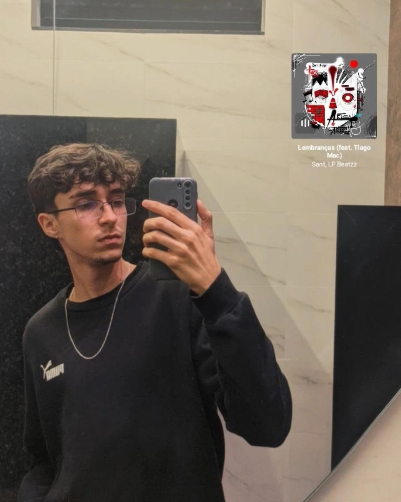

Início
Emanuel Miranda
Emanuel Miranda é um artista versátil e cativante, conhecido por sua atuação multifacetada como músico, ator e youtuber. Com uma paixão profunda por cachorros, ele encontra grande prazer em passar tempo com seus fiéis amigos caninos, que são uma parte essencial de sua vida cotidiana. Além de seu amor pelos animais, Emanuel tem um interesse por certos tipos de entorpecentes, algo que ele aborda com uma atitude consciente e equilibrada. Como músico, ele traz uma mistura única de criatividade e emoção para suas composições e performances. Na atuação, Emanuel é conhecido por sua habilidade de mergulhar em diferentes papéis, demonstrando uma gama impressionante de talentos. No YouTube, ele compartilha suas experiências e perspectivas, conectando-se com uma audiência diversificada e engajada. Sua vida é uma expressão de seus diversos interesses e talentos, refletindo uma personalidade vibrante e uma abordagem apaixonada em tudo o que faz.